S47 — Echo क्यों सुनाई देती है?
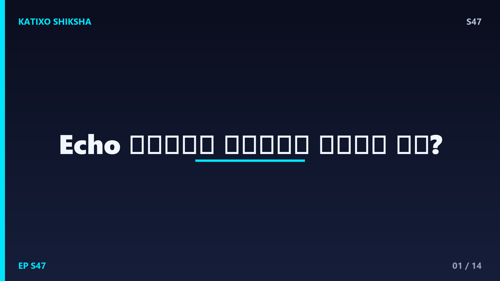
Slide 1दोस्तों, कभी किसी खाली building में या पहाड़ों के बीच जाकर जोर से चिल्लाए हो हेलो, और कुछ पल बाद वही आवाज खुद ब खुद लौटकर आई हो हेलो हेलो? डरो मत, वहाँ कोई भूत नहीं था, वो था echo यानी प्रतिध्वनि। आज Katixo KhojLab पर हम इसी मजेदार सवाल का जवाब ढूंढेंगे कि हमें echo क्यों और कैसे सुनाई देती है। हम समझेंगे sound waves, reflection और वो खास नियम जिसकी वजह से कभी echo सुनाई देती है और कभी नहीं। तो तैयार हो जाओ, चलो शुरू करते हैं इस आवाज वाली पहेली को सुलझाना।
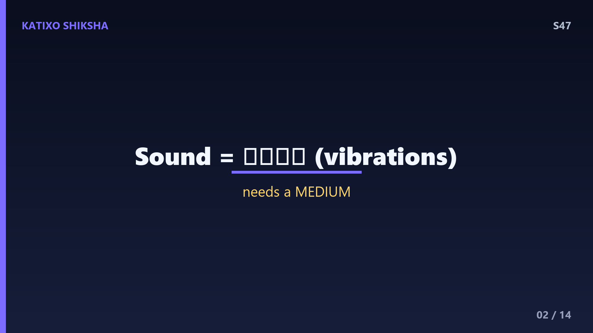
Slide 2सबसे पहले समझो कि sound असल में है क्या। दोस्तों, जब तुम बोलते हो तो तुम्हारी आवाज हवा के particles को आगे पीछे हिलाती है, और यही कंपन sound waves बनकर चारों तरफ फैलते हैं। ये बिल्कुल वैसे ही है जैसे तालाब में पत्थर फेंकने पर पानी में लहरें बनती हैं। एक खास बात याद रखना, sound को travel करने के लिए हमेशा एक medium चाहिए, चाहे वो हवा हो, पानी हो या कोई ठोस चीज। यही वजह है कि अंतरिक्ष यानी space में, जहाँ vacuum होता है, कोई आवाज travel नहीं कर सकती। बिना medium के sound बेबस है।
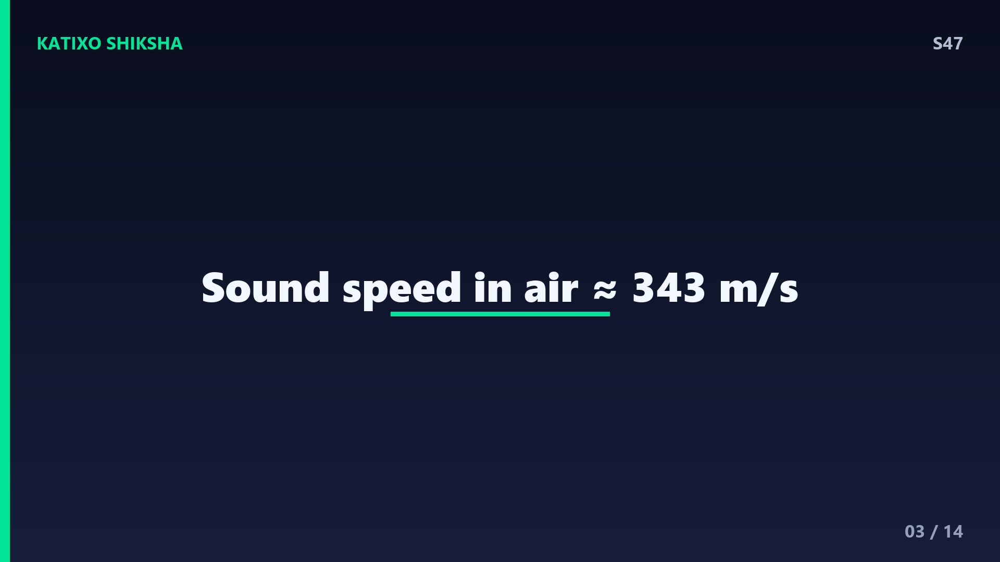
Slide 3अब बात करते हैं sound की रफ्तार की, क्योंकि यही echo को समझने की चाबी है। हवा में sound करीब 343 metre per second की speed से चलती है, यानी एक second में लगभग एक तिहाई किलोमीटर। सुनने में तेज लगता है ना? पर light के सामने ये कुछ भी नहीं, इसीलिए बिजली पहले दिखती है और गड़गड़ाहट बाद में सुनाई देती है। मजेदार बात ये है कि sound पानी में हवा से लगभग चार गुना तेज और लोहे जैसे ठोस में और भी तेज चलती है, क्योंकि वहाँ particles एक दूसरे के ज्यादा पास होते हैं और कंपन तेजी से आगे बढ़ता है।
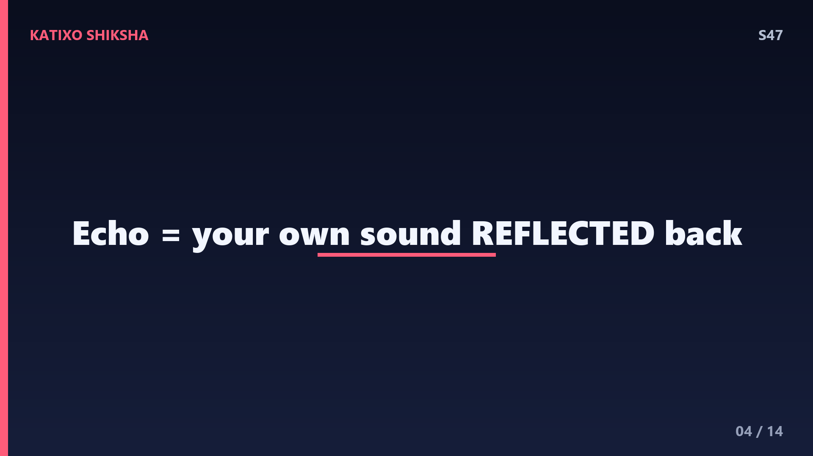
Slide 4तो echo बनती कैसे है? दोस्तों, जब sound waves किसी सख्त और सपाट surface से टकराते हैं, जैसे ऊंची दीवार, पहाड़ या किसी बड़े हॉल की छत, तो वो वापस लौट आते हैं। इसी लौटने को कहते हैं reflection यानी परावर्तन। ठीक वैसे ही जैसे शीशे से light reflect होकर तुम्हें तुम्हारा चेहरा दिखाती है। जब तुम चिल्लाते हो, sound आगे जाता है, सख्त सतह से टकराता है, और फिर बाउंस होकर तुम्हारे कानों तक लौट आता है। यही लौटी हुई आवाज echo कहलाती है। मतलब echo कोई नई आवाज नहीं, बल्कि तुम्हारी ही आवाज का reflection है।
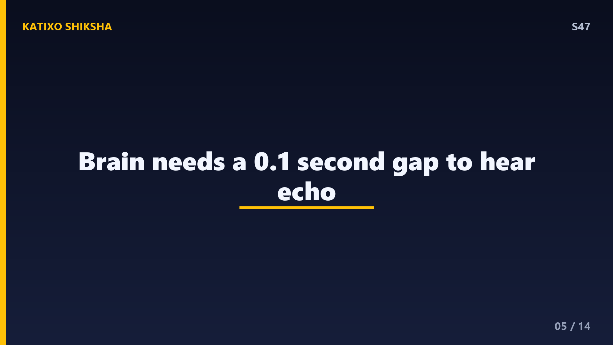
Slide 5अब सबसे बड़ा सवाल, हर बार echo क्यों नहीं सुनाई देती? इसका जवाब है हमारे कान और दिमाग की एक खास limit में। हमारा brain किसी आवाज की गूंज को करीब 0.1 second तक याद रखता है, इसे persistence of sound कहते हैं। echo को अलग आवाज के रूप में सुनने के लिए, original sound और लौटी हुई sound के बीच कम से कम 0.1 second का gap होना जरूरी है। अगर ये gap इससे कम हो, तो दोनों आवाजें हमारे दिमाग में आपस में मिल जाती हैं और हमें लगता है कि वो एक ही लंबी आवाज है, कोई अलग echo नहीं।
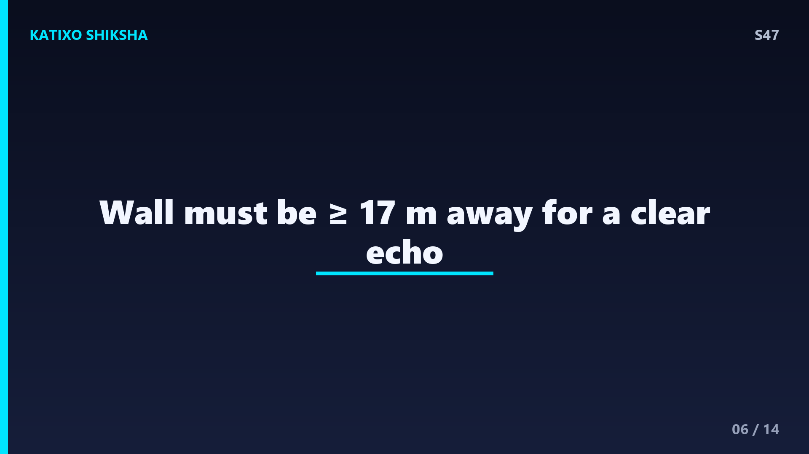
Slide 6इसी 0.1 second के नियम से निकलता है echo का famous 17 metre rule। चलो हिसाब लगाते हैं। sound की speed है 343 metre per second, और हमें चाहिए 0.1 second का gap। इस समय में sound जितनी दूरी तय करती है वो है लगभग 34 metre। पर रुको, sound को surface तक जाकर वापस भी तो आना है, यानी ये दूरी दो बार तय होती है। तो reflecting दीवार तुमसे कम से कम लगभग 17 metre दूर होनी चाहिए। इसीलिए छोटे कमरे में echo नहीं, पर बड़े खाली हॉल या पहाड़ों में आसानी से echo सुनाई देती है।
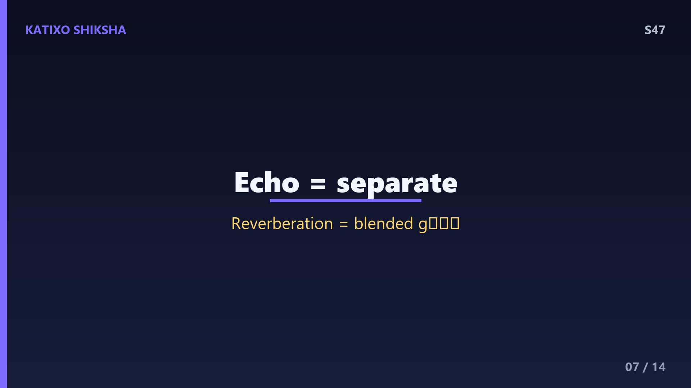
Slide 7अब echo और एक मिलते जुलते शब्द reverberation में फर्क समझ लो, ये अक्सर लोग उलझा देते हैं। echo में तुम original आवाज और लौटी हुई आवाज को अलग अलग साफ साफ सुनते हो, जैसे पहाड़ में हेलो हेलो। पर reverberation में आवाज बार बार कई सतहों से reflect होती रहती है और एक दूसरे में घुलकर एक लंबी गूंज बना देती है, जिसमें अलग echo पहचानना मुश्किल होता है। बड़े मंदिरों, खाली बाथरूम या ऑडिटोरियम में यही reverberation होता है। तभी तो खाली बाथरूम में गाना गाने पर तुम्हारी आवाज ज्यादा भरी भरी और दमदार लगती है दोस्तों।
Slide 8सोचो, अगर दीवारें हर आवाज को इतनी जोर से reflect करतीं तो सिनेमा हॉल और स्टूडियो में बात करना नामुमकिन हो जाता। इसीलिए इन जगहों पर soft और porous चीजें लगाई जाती हैं, जैसे मोटे पर्दे, कालीन, फोम और sound absorbing panels। ये नरम चीजें sound waves को reflect करने के बजाय सोख लेती हैं, यानी absorb कर लेती हैं। इससे unwanted echo और reverberation कम हो जाते हैं और आवाज साफ सुनाई देती है। यही वजह है कि recording studio की दीवारें अंदर से उबड़ खाबड़ फोम से ढकी होती हैं, ताकि कोई आवाज बाउंस होकर recording को खराब ना करे।
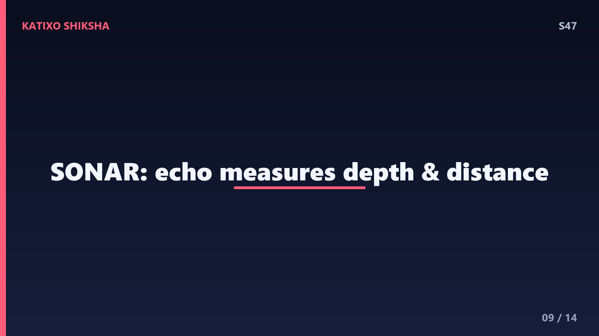
Slide 9अब मजे की बात, echo सिर्फ एक trick नहीं, बल्कि इसका इस्तेमाल बड़े बड़े काम के लिए होता है। समुद्र में जहाज और पनडुब्बियां SONAR नाम की technology यूज करती हैं। ये एक sound pulse पानी में भेजती हैं, जो समुद्र की तली या किसी मछलियों के झुंड से टकराकर echo बनकर लौटता है। आवाज को लौटने में लगे समय से वैज्ञानिक हिसाब लगा लेते हैं कि चीज कितनी दूर और कितनी गहरी है। याद है ना sound पानी में और तेज चलती है? इसी की वजह से SONAR समुद्र की गहराई और छिपी चीजें ढूंढने में बहुत कारगर साबित होता है।
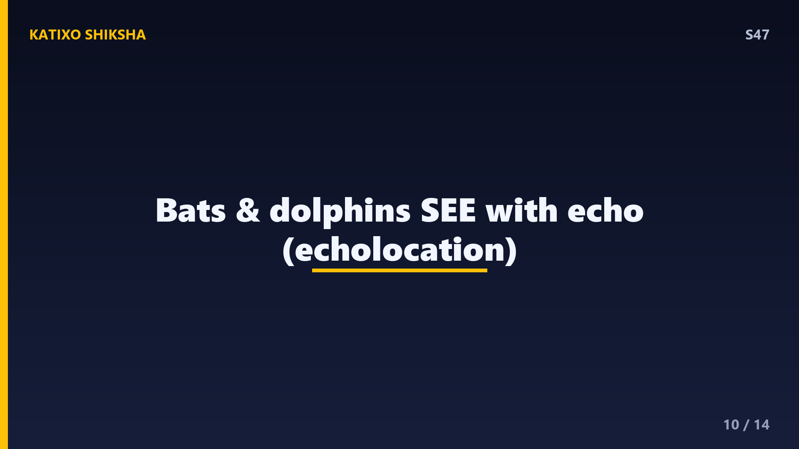
Slide 10कुदरत ने तो echo का इस्तेमाल हमसे बहुत पहले शुरू कर दिया था। चमगादड़ यानी bats घनी रात में भी बिना टकराए उड़ते हैं, और इसका राज है echolocation। ये बहुत ऊंची frequency वाली आवाजें निकालते हैं, जो हमारे कान सुन भी नहीं सकते, इन्हें ultrasonic sound कहते हैं। ये आवाजें आसपास की चीजों और कीड़ों से टकराकर echo बनकर लौटती हैं। उस echo से bats समझ जाते हैं कि शिकार कहाँ है और दीवार कितनी दूर है। डॉल्फिन भी पानी के अंदर बिल्कुल यही जादू करती हैं। यानी echo इन जानवरों की आंखों जैसा काम करता है।
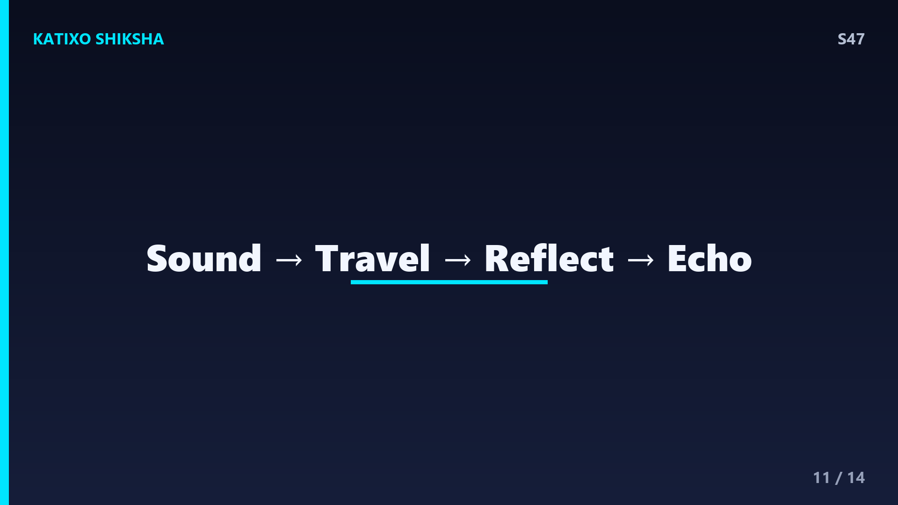
Slide 11तो चलो दोस्तों, अब तक की पूरी कहानी एक झलक में जोड़ लेते हैं। तुम आवाज निकालते हो, वो sound waves बनकर medium में फैलती है। ये waves किसी सख्त और दूर की surface से टकराती हैं और reflect होकर वापस लौटती हैं। अगर वो surface कम से कम 17 metre दूर है, तो लौटी हुई आवाज और original आवाज के बीच 0.1 second से ज्यादा का gap बन जाता है, और तुम्हारा brain उसे अलग आवाज यानी echo के रूप में पहचान लेता है। बस इतनी सी physics है, sound, reflection, distance और time का खूबसूरत मेल। है ना कमाल?
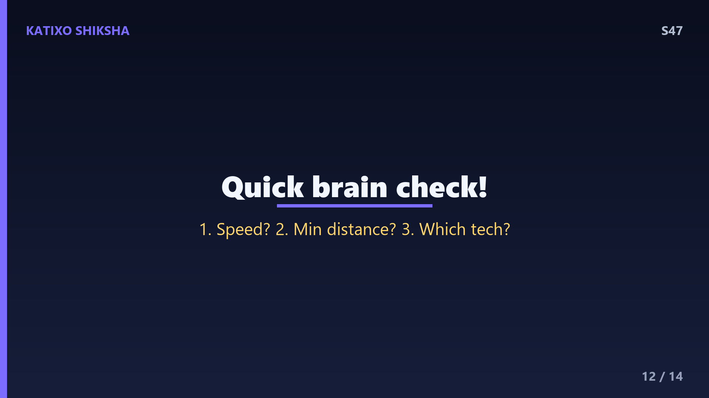
Slide 12Quick brain check! चलो देखते हैं तुमने कितना ध्यान से समझा। पहला सवाल, हवा में sound की approximate speed कितनी होती है, metre per second में बताओ। दूसरा सवाल, echo को एक अलग आवाज के रूप में सुनने के लिए reflecting surface कम से कम कितनी दूरी पर होनी चाहिए? और तीसरा सवाल, वो कौन सी technology है जो sound के echo से समुद्र की गहराई और छिपी चीजें पता लगाती है? जरा रुको, video को pause करो, थोड़ा सोचो और अपने जवाब मन में या कॉपी में लिख लो। फिर अगली slide पर मिलकर answers check करते हैं। All the best दोस्तों!
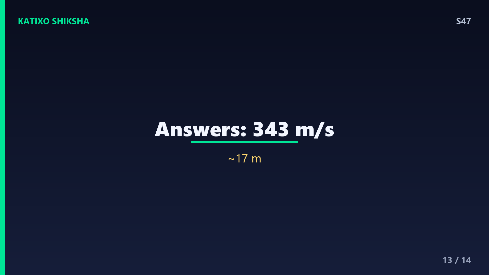
Slide 13तो चलो अब जवाब मिला लेते हैं दोस्तों। पहले सवाल का जवाब, हवा में sound की speed होती है लगभग 343 metre per second, यानी करीब एक तिहाई किलोमीटर हर second। दूसरे सवाल का जवाब, echo को अलग से सुनने के लिए reflecting surface कम से कम लगभग 17 metre दूर होनी चाहिए, क्योंकि तभी 0.1 second का जरूरी gap बनता है। और तीसरे सवाल का जवाब है SONAR, जो sound के echo से पानी के अंदर दूरी और गहराई नापता है। बताओ कितने सही हुए? अगर तीनों सही हैं तो शाबाश, तुम तो असली sound detective बन गए हो।
Slide 14तो दोस्तों, आज हमने सीखा कि echo असल में तुम्हारी ही आवाज का reflection है, जो सख्त surface से टकराकर लौटती है। हमने समझा 343 metre per second की speed, 17 metre और 0.1 second का जरूरी नियम, reverberation का फर्क, और SONAR से लेकर bats के echolocation तक के कमाल। अब जब भी कहीं echo सुनो, तुम्हें ठीक ठीक पता होगा कि पीछे क्या science छिपी है। अगले episode में हम एक और मजेदार राज खोलेंगे, हम शरमाते क्यों हैं यानी why do we blush? बहुत interesting होने वाला है। Subscribe करना मत भूलना! Bye!